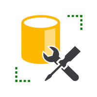
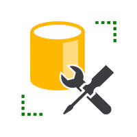

Hvem?
Mit navn er Marc Klesiewicz, jeg er 26 år, er
opvokset på Lolland, men bor nu i Odense for at studere til Datamatiker (3. semester) -
som også er det jeg bruger det meste af min tid på.
Jeg bor i et lille hus sammen med min kæreste Mathilde og vores hund Cody.
Mit studie reflekterer mine interesser, i form af egne projekter - og ellers bruger jeg min
tid på musik, film og både større og mindre byggeprojekter - fx har vi selv bygget vores hus.
Hvorfor?
Interessen for teknologi og software har altid fulgt mig på hobby-niveau, det var dog først i 2019 at jeg
besluttede mig for at prøve at forstå den - hvilket jeg indså, ikke var så let...
Jeg gjorde som mange andre, og så et par programmerings-tutorials, hvor jeg med det samme blev
hooked.
Så meget at jeg sendte min gamle UU vejleder en negativ tanke, for ikke at introducere mig for
ideen om at blive softwareudvikler.
Ikke lang tid efter, søgte jeg ind på datamatiker studiet. Som både har forbedret mine egenskaber indenfor programmering og systemudvikling, men samtidig også sporet mig ind på hvor mine
styrker er.
Mine største interesser ligger i crossplatform app-udvikling med Flutter/Dart og Blockchain Teknologi.
Hvordan?
Under mit uddannelsesforløb har jeg kunne afprøve adskillige udviklingsmetoder og procesmodellen, som begge har givet mig en analytisk og struktureret tilgang at arbejde på. Derudover lader jeg mig nemt inspirere af andres erfaringer og på måde optimere mine egne ift. den stillede opgaven.
Jeg ser mine stærkeste kompetencer som idegenerering, projektstyring, min nysgerrighed for faget og sans for detaljen.


 
